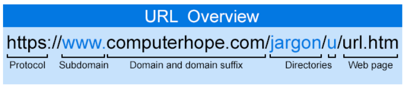

Updated: 28/06/2022 by AJ Ict Hub
A site or website is a central location of web
pages that are related and accessed by visiting the
 home page of the website using a browser. For
home page of the website using a browser. For
example, the Computer Hope website address
URL (Uniform Resource Locator) is
https://www.computerhope.com. From our home
page, you could get access to any of the web
pages (like this one) contained on our website.
The image shows how the Computer Hope
website looked in 2021.
How to open a website
To view a website requires a browser (e.g., Internet Explorer, Edge, Safari, Firefox, or
Chrome).
For
example, you are reading this web page using a browser. Once in a browser, you can open a website by
entering the URL in the address bar. For example, typing "https://www.computerhope.com" opens the
Computer Hope home page. If you don't know the URL of the website you want to visit, you can use a
search engine to find the website on the Internet.
When was the first website created?
The first website was built at CERN by Tim Berners-Lee and launched on August 6, 1991. Visit
and browse the first website
How many websites are on the Internet?
As of January 2018, depending on which survey or hosting company being referenced, there are
between
1.3 and 1.8 billion websites. Many of these websites are unused or not visited by many people, but the
websites still exist and included in the count.
What is the difference between a website and a web page?
A website refers to a central location with more than one web page or several web pages. For
example,
Computer Hope is considered a website, which contains thousands of different web pages, including
the
page you're reading now.

In the above URL example, the website is computerhope.com, and the web page is "url.htm."
Tip: A web page does not need a file extension like .htm or .html to be a web page.
Many sites are
designed to show a default page in a directory (e.g., index.html) or set up to have no file extensions
Tip: See our web page definition for a breakdown of all the elements that help make up a web page.
Who creates websites on the Internet?
Any business, government, organization, or person can create a website on the Internet. Today,
the
Internet consists of billions of websites created by billions of different people. You can even create a
website or blog on the Internet. See the below types of websites section for a list of the types of
categories of websites.
What can you do on a website?
On most websites, you read the information contained on each web page. If there are any
interesting
hyperlinks, you follow those links by clicking or tapping on them to find more information or perform a
task. You can also listen to music, watch videos, shop, communicate, and much more on many websites.
Types of websites
There are billions of websites on the Internet today that can be broken into one of the
following types of
website categories. Keep in mind that it is possible for a website to fall into more than one of the
following categories. For example, a website may also be a forum, webmail, blog, or search engine.
Archive website
An archive website is a site that keeps a record of the contents of one or more other
websites.
The
Internet Archive is the best example of an archive website.
Blog (weblog)
A blog is a website that is often created by an individual to keep a list of entries
that interests them.
See
our weblog definition for a full description, services used to create a blog, and related pages.
A
microblog website is also another popular form of blogging website that limits the number of
characters
someone can post in each blog entry. Twitter is an example of a social networking website for a
microblog.
Business website and corporate website
A business website or corporate website is created to provide account information
and access
to
customers, partners, clients, and potential customers.
Community website
A community website is a website or section of a website that helps bring the visitors
visiting the site
together using chat, forums, or another form of bulletin boards.
Content website and information website
A content website and information website are created with the intention of
displaying unique
content
that is often related to a specific category. For example, Computer Hope could be considered a content
site with computer-related content. Other categories could include a political website with
content
relating to politics or a political view, or a religious website with information about a
specific
religion.
Dating website
A dating website is a site set up to help connect people who may be interested in
meeting other people
or dating other people. Most dating websites require a small fee, require a description of yourself, and
often asks questions to help find people that would best match your interests.
E-commerce website
An e-commerce (electronic commerce) website is any site
that was created with the intention of selling online goods or
services. Amazon is an example of an e-commerce website.
An e-commerce website may be broken down even further
into one of the following subcategories.
An affiliate website is a website created with the intention of selling third-party
products. For example,
Amazon has an affiliate program for anyone to link to their site and make a commission when products
are purchased. An affiliate website should not be confused with an e-commerce website.
An auction website is a website that allows other people to sell their goods or
services. For example,
eBay is one of the most well-known online auction websites. See our online auction page for further
information and examples.
A classified ads website is a site that allows anyone to list goods or services,
usually for free or at a
small cost. Craigslist is an example of a classified ads website.
A crowdfunding website is set up to help support a business, person, or another cause
by making a one
time or monthly payment. An example of a crowdfunding website is Kickstarter.
Educational website
An educational website is any website containing content that aids in learning. It could be a
school
website, a library website, a homework assistance website, or any other tools for gaining knowledge
online.
Gaming website
A gaming website is any website that features games that can be played on the website.
Often these
online games are created using HTML5, Flash, or Java. Gaming websites should not be confused with a
gaming content website with content relevant to gaming with no actual games to play on the website.
Government website
A government website is a department, local, or state government site that was created
to help inform
the public about government business and services. A local government website may also be set up to
help promote tourism.
Tip: In the United States a government website has the domain suffix .gov.
In the
United Kingdom, they
use .gov.uk
Help and Q&A website
A help website and questions and answers website is a site
where anyone can post questions and other users help
 answer those questions. A full listing of help websites where
answer those questions. A full listing of help websites where
you can ask any question is on the link below.
Malicious website
A malicious website is any website that was set up with the
intention of infecting another computer or collecting
personal data. For example, a malware website is a site
created with the intention of
infecting any visitor with malware, spyware, or a trojan horse.
These types
of sites could have a download that's infected and, if downloaded, infects your computer.
Other common malicious websites include phishing websites. These sites are designed
to look like other
official sites (e.g., your bank) with the hope that they can phish sensitive information such as your
username and password.
Fake news websites are another type of malicious site created to appear as a
legitimate source of news
with the intention of helping to spread fear and lies.
Media sharing website
A media sharing website is any website that
specializes in allowing visitors to share one or more
types of media. For example, YouTube is a site for
sharing video media. SoundCloud is a site for sharing
music. Flickr is a place to share photos. DeviantArt is a page for sharing art.
Mirror website
A mirror website is a complete duplicate of another website that is used when a
website becomes
overloaded. It helps with a website's speed in different parts of the world. See our mirror definition
for
further information. Also, although similar, a mirror site should not be confused with a scraper
website
or a CDN.
News website
A news website is a site dedicated to giving the latest local or world news. A news
site may also be
dedicated to a specific topic. For example, many computer-related news websites are dedicated to
talking
about the latest computer and technology related news.